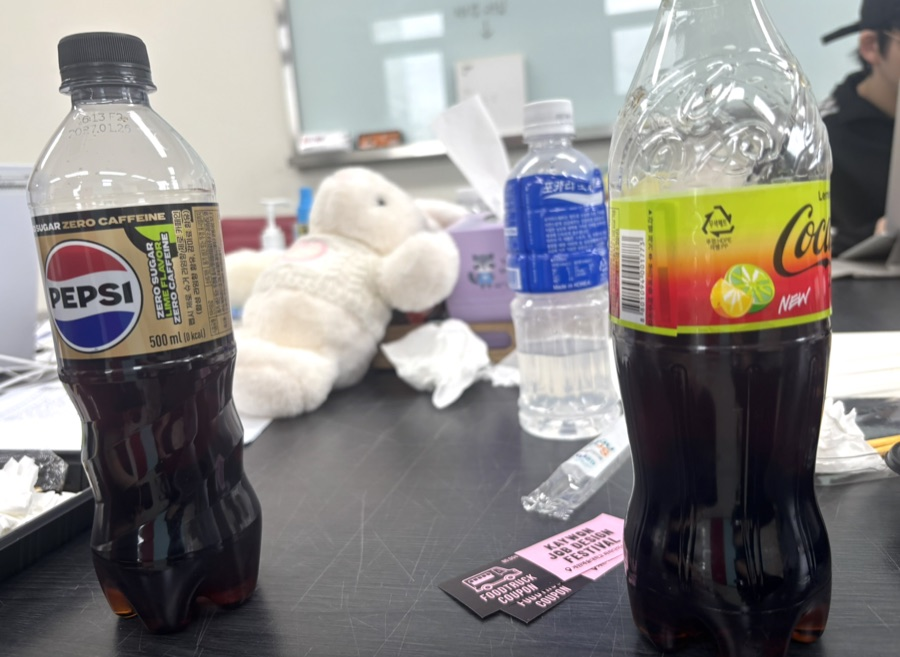

Sep 11 (Fri)
더 드라마 예쁜 영화 하나 수입해서 그걸로 개 억지 마케팅 8만원짜리 로고 티셔츠 팔기 개빡침 두 사람을 닮은 카라비너 이지랄 심지어 지들 로고 형태
버스에서, +36
더 드라마 예쁜 영화 하나 수입해서 그걸로 전혀 그럴 마음이 없습니다. 마케팅 8만원짜리 로고 티셔츠 팔기 그 사람들 모두 넌더리가 나요. 두 사람을 닮은 카라비너 맙소사! 심지어 그 사람들 모두 넌더리가 나요. 로고 형태 그 사람 성품이 어떻든 이곳에선 아무한테도 별 의미가 없게 될 거야. 언젠가 모든 것이 밝혀질 테고, 그러면 우린 그것도 몰랐느냐고 사람들의 어리석음을 비웃을 수 있겠지. 지금으로선 아무 말도 않겠어.
오만과 편견 1부 74p, 112p · 2부 215p, 308p
Sep 12 (Sat)
뒷자리 똥 냄새가 남
대중교통에서, +12
뒷자리 이보다 더 충격받은 적은 없는 것 같아. 냄새가 남
오만과 편견 2부 306p
Sep 13 (Sun)
식초 냄새인지 땀 냄새인지
대중교통에서, +183
식초 냄새인지 땀 냄새인지
Sep 14 (Mon)
중간에 나올 거면 살살 나오기라도 해
공연장(아르바이트)에서, +212
중간에 나올 거면 살살 나오기라도 해
Sep 15 (Tue)
악취가 심하고 보고 싶지 않은 꼴이 많다
지하철에서, +239
악취가 심하고 보고 싶지 않은 꼴이 많다.
Sep 16 (Wed)
지하철 지도가 이상한데?
지하철에서, +550
지하철 지도가 이상한데?
Sep 17 (Thu)
덥다
지하철에서, +603
덥다
Sep 18 (Fri)
차량 불량이라고 내 옆에서 한숨 계속 쉬면서 씨발 씨발 한숨 쉬는 새끼 내 발 밟고 사과 안 하는 개줌마 아 개 빡돈다 이 씨발 것들
지하철에서, +690
차량 불량이라고 내 옆에서 한숨 계속 쉬면서 맙소사! 아이, 망측해! 한숨 쉬는 저렇게 흉한 소리는 여태 한 번도 못 들어 봤어요. 저런 말을 입에 담다니 어떻게 응징해야 할까요? 먼 내 발 밟고 사과 안 하는 올바른 처신과는 거리가 먼 아 완전히 제멋대로예요! 제발! 이 맙소사! 것들
오만과 편견 1부 81p, 112p · 2부 292p, 315p
Sep 19 (Sat)
씨발 짐이 너무 많아서 짜증나 죽겠다 들고 다닐 게 존나 많고 존나 무거워 씨발
아침 등교 길에서, +700
맙소사! 짐이 너무 많아서 짜증나 죽겠다 들고 다닐 게 세상에, 많고 세상에, 무거워 맙소사!
오만과 편견 1부 112p, 113p
Sep 20 (Sun)

오늘의 감사(마찰)
1. 주희와 혜린의 큰 웃음 선사
2. 김밥천사 승현
3. 수업을 잘 마쳤음. 활발한 팀플 교류
4. 주공의 스캔본
5. 기타등등
학교에서, 알 수 없음
오늘의 감사(마찰)
1. 주희와 혜린의 큰 웃음 선사
2. 김밥천사 승현
3. 수업을 잘 마쳤음. 활발한 팀플 교류
4. 주공의 스캔본
5. 기타등등
Sep 21 (Mon)
사람이 내리면 눈치껏 비켰으면 좋겠다 개짜증남 염주 앱에서 리뷰 남길 거냐고 계속 물어보는 것도 개빡돌음
지하철에서, +725
사람이 내리면 눈치껏 비켰으면 좋겠다 그 사람들 모두 넌더리가 나요. 염주 앱에서 리뷰 남길 거냐고 계속 물어보는 것도 그거야말로 진짜 결점이네요!
오만과 편견 1부 83p · 2부 215p
Sep 22 (Tue)
내가 느그 문지기니?
공연장(아르바이트)에서, +730
내가 그들은 무지하고 나태하며 허영만 가득했다. 문지기니?
오만과 편견 2부 292p
Sep 23 (Wed)
지하철역 앞에서 가오 자세로 담배피고 침 찍찍남 🖕🖕🖕🖕🖕
지하철 입구에서, +732
지하철역 앞에서 그것을 보고 있자니 더욱 화가 치밀었고,로 담배피고 나라면 그딴 인간하고는 춤추지 않을 거다. 🖕🖕🖕🖕🖕
오만과 편견 1부 30-31p · 2부 262p
Sep 24 (Thu)
웬 미친년을 봤나 나보고 모기를 잡으라고 하네...
공연장(아르바이트)에서, 알 수 없음
웬 건방진 계집애! 봤나 나보고 모기를 잡으라고 하네...
오만과 편견 1부 135p
Sep 25 (Fri)
존나 짜증난다 그냥
알 수 없음, 알 수 없음
세상에, 짜증난다 그냥
오만과 편견 1부 113p
Sep 26 (Sat)
슈퍼밀크 그만...
버스에서, 알 수 없음
슈퍼밀크 그만...
Sep 27 (Sun)
엉뜨
지하철에서, 알 수 없음
엉뜨
Sep 28 (Mon)
블렌더 훈수
학교에서, 알 수 없음
"이런 편지를 받으면 다아시 양은 정말 기쁘겠어요!"
묵묵부답.
"편지를 굉장히 빨리 쓰시네요."
"잘못 보셨는데요. 좀 느리게 쓰는 편입니다."
오만과 편견 1부 67p
Sep 29 (Tue)
더웠음...
지하철에서, 알 수 없음
더웠음...
Sep 30 (Wed)
맛없는 파스타
집에서, 알 수 없음
맛없는 파스타
Oct 1 (Thu)
내 이어폰 미친 씨발
아침 등교 길에서, 알 수 없음
내 이어폰 모두들 뜨악해했다. 맙소사!
오만과 편견 1부 62p, 112p
Oct 2 (Fri)
오랜만에 느끼는 씨발이라는 감정 셔틀못탔고, 버스 존나 기다려야 하고, 지하철은 존나 덥고 냄새 난다
하교길에서, 알 수 없음
오랜만에 느끼는 어유! 저 가증스러운 인간 다아시! 셔틀못탔고, 버스 세상에, 기다려야하고, 지하철은 세상에, 덥고 냄새 난다
오만과 편견 1부 113p · 2부 202p
Oct 3 (Sat)
양옆에 시끄럽게 떠들고 입냄새나는 남자들밖에 없어...
지하철에서, 알 수 없음
양옆에 시끄럽게 떠들고 입냄새나는 남자들밖에 없어... 그는 너무나 역겹고 불쾌한 인물로 전락했고, 친구와는 비교할 가치조차 없는 인물이 되어 버렸다.
오만과 편견 1부 18-19p
Oct 4 (Sun)
개샠갸
지하철에서, 알 수 없음
허영심이 가득하고, 무식하고, 게으르고, 완전히 제멋대로예요! 제발!
오만과 편견 2부 315p
Oct 5 (Mon)
더워 씨발
알 수 없음, 알 수 없음
더워 맙소사!
오만과 편견 1부 112p
Oct 6 (Tue)
음악하는 사람 일부의 가식적인 면은 재수가 없고 시급받는 알바로서는 음...
공연장(아르바이트)에서, 알 수 없음
음악하는 사람 일부의 가식적인 면은 그러나 저는 어떤 종류의 가식도 혐오합니다. 시급받는 알바로서는 음...
오만과 편견 2부 266p
Oct 7 (Wed)
사기 당할 뻔 했던 것에 대한 분노 사칭범의 사칭 대상에 화가 나는 오류 자괴감
집에서, 알 수 없음
내가 그렇게 한심하게 처신했다니!
오만과 편견 2부 286p
Oct 8 (Thu)
지금존나예민함
알 수 없음, 알 수 없음
우선 무슨 소리를 하나 어디 한번 알아나 보자는 심정으로 네더필드에서의 일에 대한 그의 해명을 읽기 시작했다. 그런데 너무 열중하며 서두르는 바람에 제대로 다 이해하지 못한 채 넘어가기도 하고, 다음 문장이 어떻게 이어질지 조급한 마음에 바로 눈앞에 있는 문장의 뜻에 집중하지 못할 지경이었다.
오만과 편견 2부 280p
Oct 9 (Fri)
캡처 왜 안돼 씨발 사라지지 마
알 수 없음, 알 수 없음
캡처 왜 안돼 맙소사! 사라지지 마
오만과 편견 1부 112p
Oct 10 (Sat)
월급 줘 미친 또 일 안 하네 이러다가 또 한달 처 지나서 주려고
알 수 없음, 알 수 없음
월급 줘 모두들 뜨악해했다. 또 일 안 하네 이러다가 또 한달 도대체 왜 그렇게까지 하는 걸까요? 무엇 때문에 그렇게까지 잔인한 행동을 하게 되었을까요? 지나서 주려고
오만과 편견 1부 62p, 113p